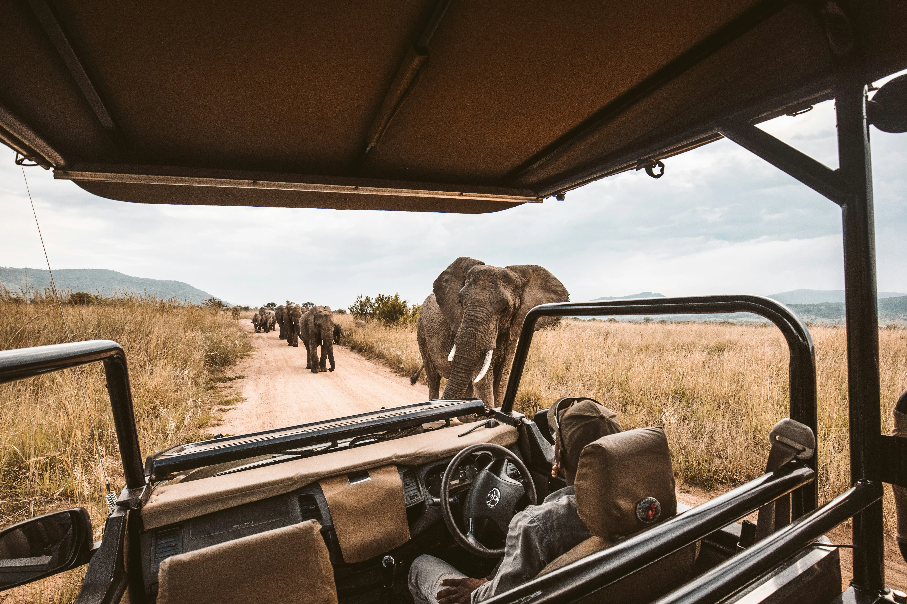

Despierta entre la calma salvaje de África
Una experiencia inmersiva donde el lujo moderno se funde con el espíritu ancestral de la sabana.
Nuestra esencia
Un Refugio de Elegancia Atemporal
En Nuru Safari, no solo ofrecemos una estancia; curamos un diálogo entre el alma y el horizonte infinito. Nuestra arquitectura minimalista respeta la topografía del terreno, utilizando materiales nobles que envejecen con la gracia del continente.
Descubra nuestro proposito